Un tesoro de la tierra
Un diamante necesita millones de años para formarse y salir a la superficie. Por eso es la gema más valorada para un anillo de compromiso, símbolo de eternidad.
Compromiso y boda
Hacer la gran pregunta y enlazar vuestras vidas son dos de los momentos más emotivos que viviréis juntos. Recordadlos con el anillo de compromiso y las alianzas de boda.
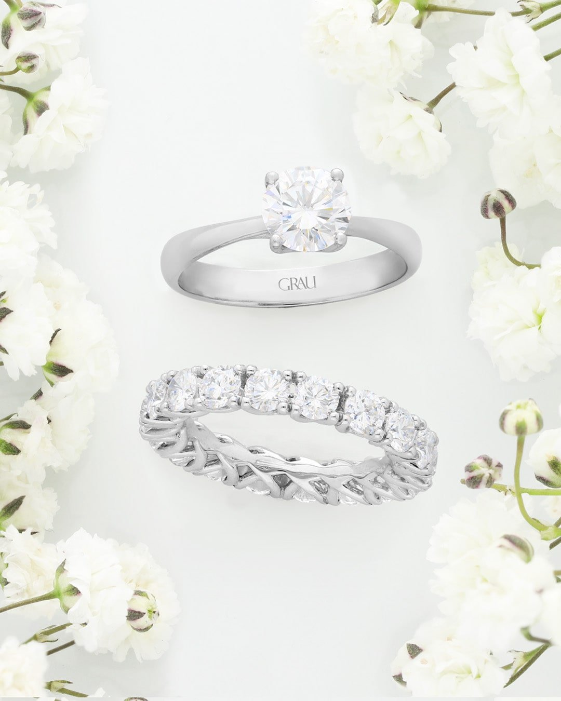
Anillos de compromiso
Ya tienes a tu media naranja. Solo te falta el anillo para que el momento sea redondo.
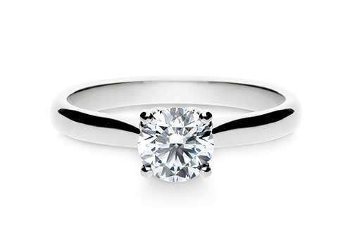
Anillo de compromiso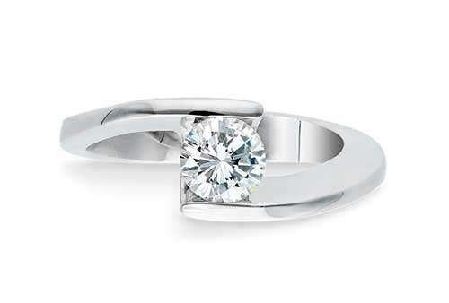
Anillo de compromiso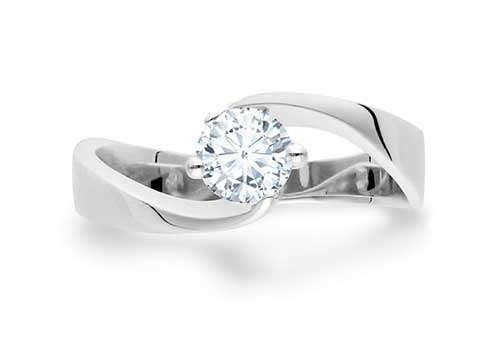
Anillo de compromiso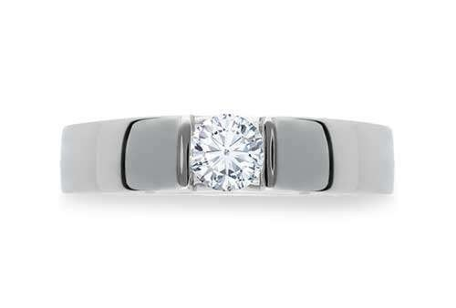
Anillo de compromiso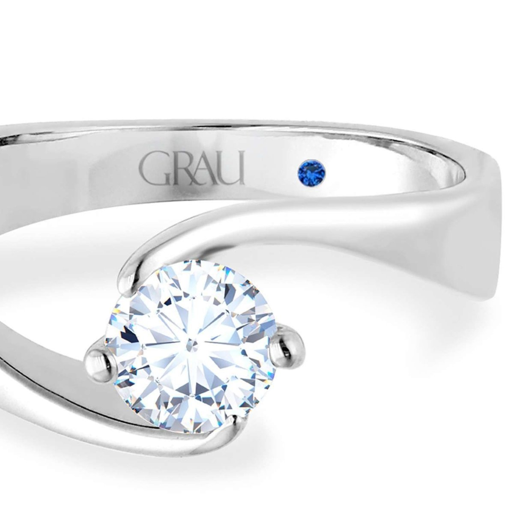
Algo azul
El azul es símbolo de amor y fidelidad. Los anillos de compromiso Grau llevan un zafiro azul en el interior del aro, como un guiño a esa antigua tradición.
Un diamante necesita millones de años para formarse y salir a la superficie. Por eso es la gema más valorada para un anillo de compromiso, símbolo de eternidad.
Cada historia es diferente. Cuando elijas el modelo, nuestros maestros joyeros lo crearán desde cero siguiendo tus deseos.
Utilizamos aleaciones propias, fundidas, forjadas y pulidas a mano: oro de 24 k aleado para conseguir oro de 18 k en distintos colores, y platino.
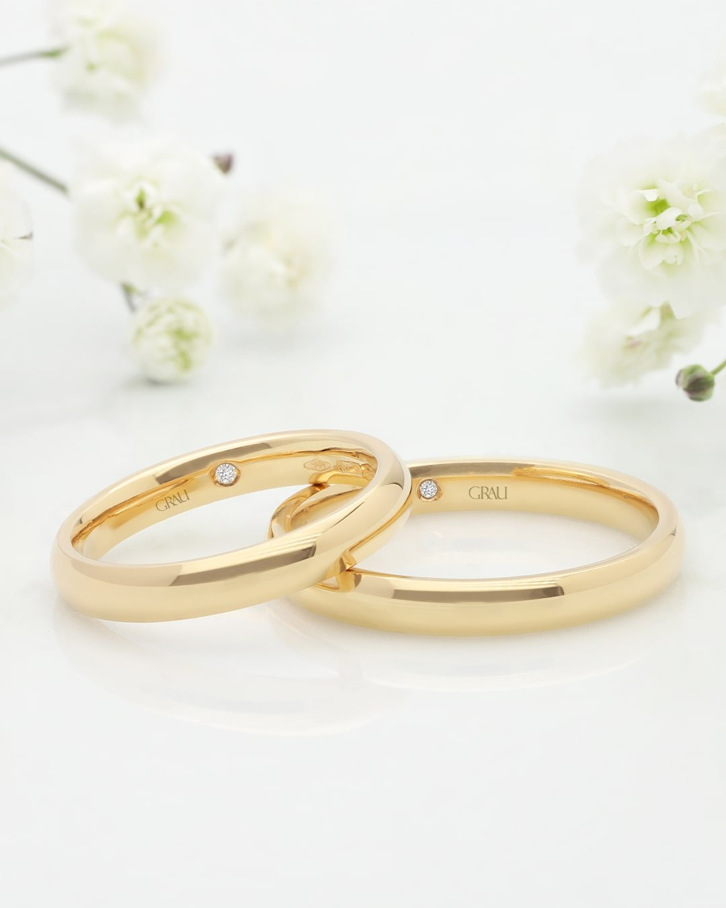
Alianzas de boda
Elegid las alianzas que serán el símbolo de vuestro enlace, en oro rosa, oro amarillo, oro blanco o platino. Llevamos desde 1947 ayudando a crear historias de amor.
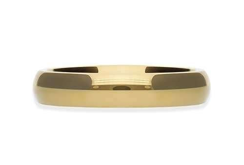
Alianza de boda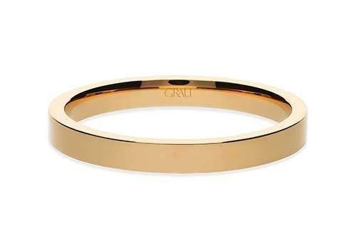
Alianza de boda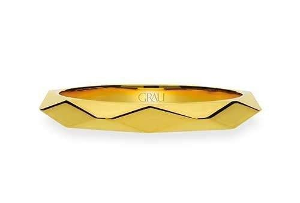
Alianza de boda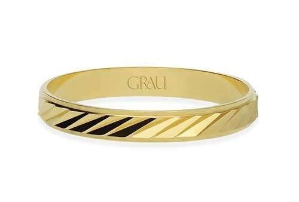
Alianza de bodaTodas nuestras alianzas se realizan en oro de 18 k o platino, con nuestra propia aleación para conseguir colores vivos y piezas duraderas.
Adquirimos los diamantes en origen y seguimos la cadena de custodia. Nuestros diamantes parten de la calidad G-VS2.
Desde el grabado hasta la forma, todo es posible para que vuestras alianzas reflejen lo que solo vosotros sabéis.
En todas nuestras alianzas añadimos un pequeño diamante en el interior, para desearos prosperidad en este nuevo camino.
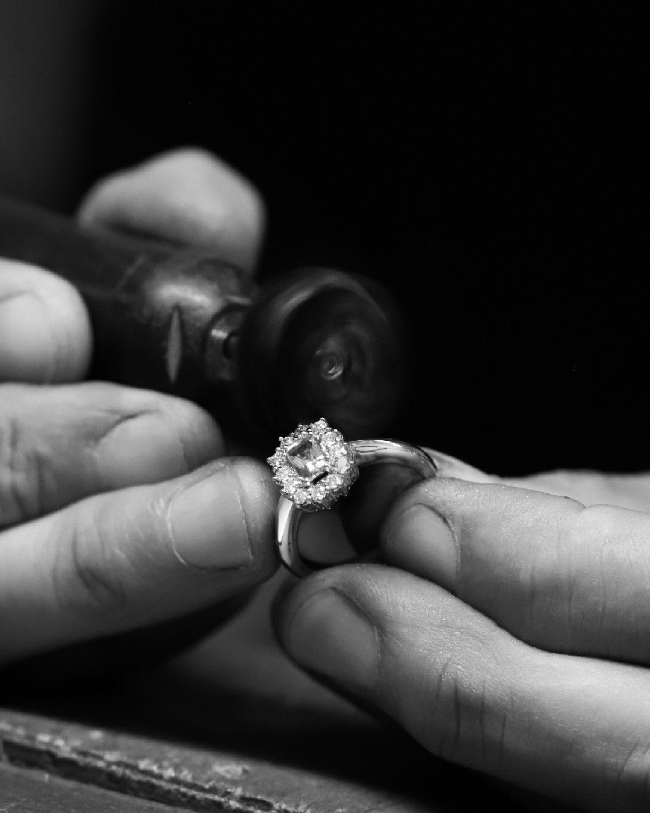
Somos joyeros
Una larga tradición joyera nos precede. Las joyas Grau se realizan a mano en nuestro taller, donde controlamos cada proceso para que vuestros anillos superen vuestras expectativas.
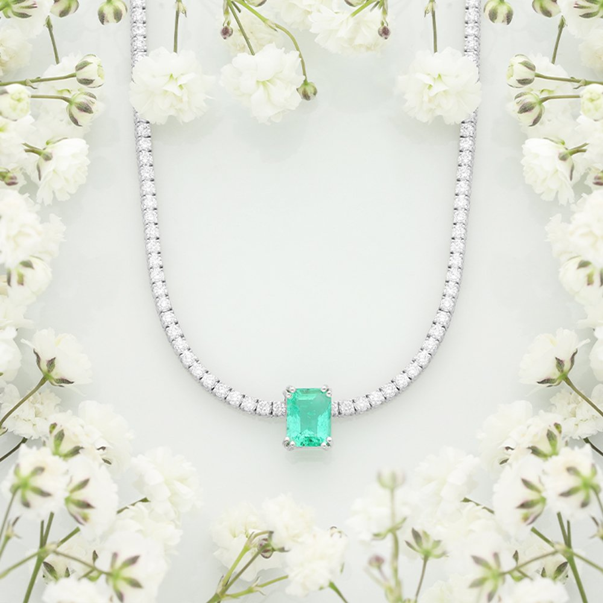
El gran día
Encuentra el complemento ideal para combinar con tu vestido o tu traje. Y si prefieres pedir matrimonio con un reloj, también tenemos relojes de compromiso para hombre.
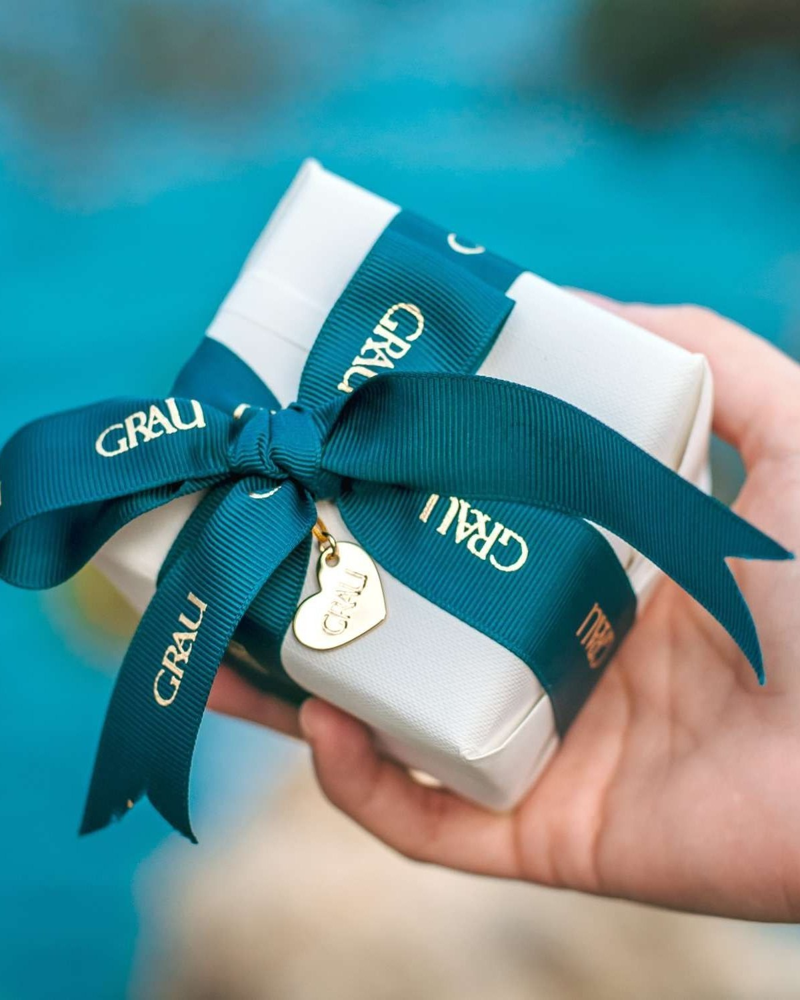
El estuche Grau
Todas las joyas Grau se entregan cuidadosamente envueltas en nuestro embalaje original, realizado con materiales ligeros y sostenibles.
Asesores personales
Nuestro equipo te espera con ilusión para ayudarte a encontrar el anillo o las alianzas perfectas.